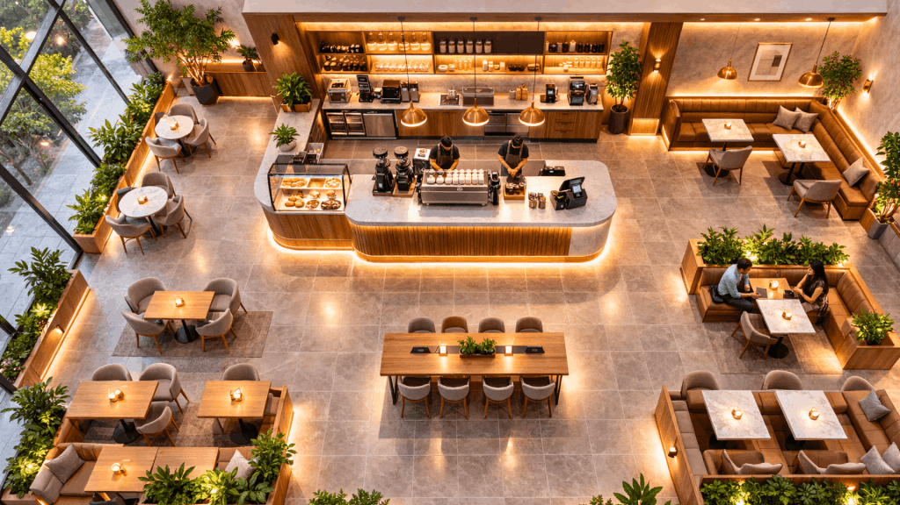
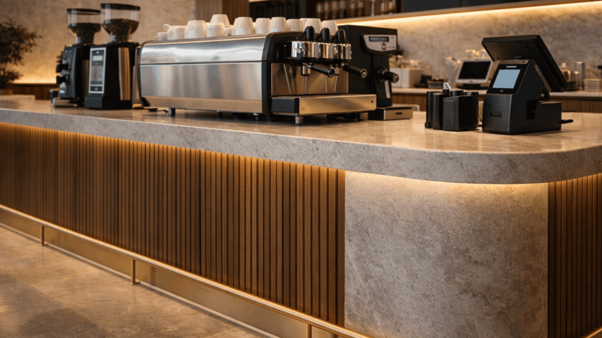
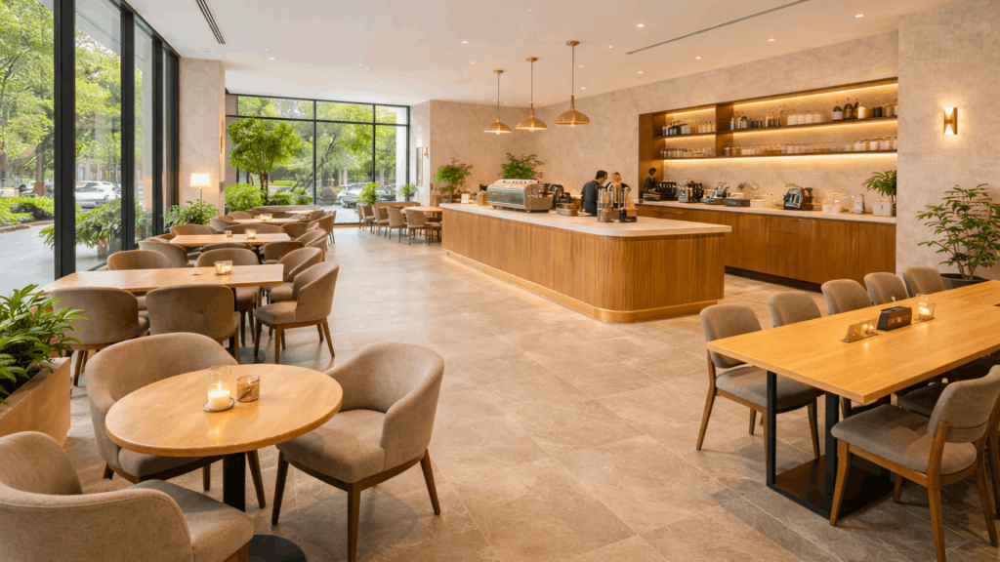
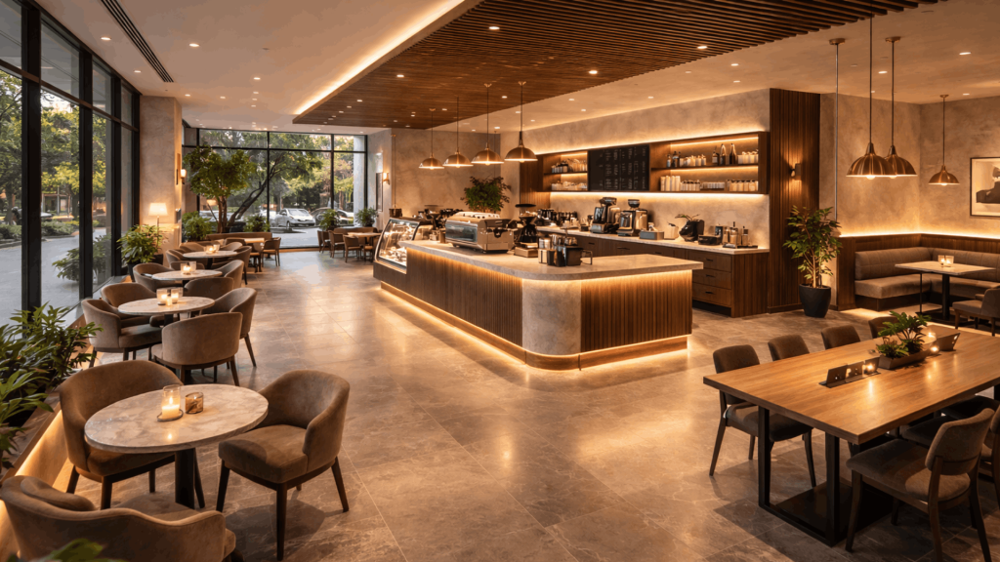
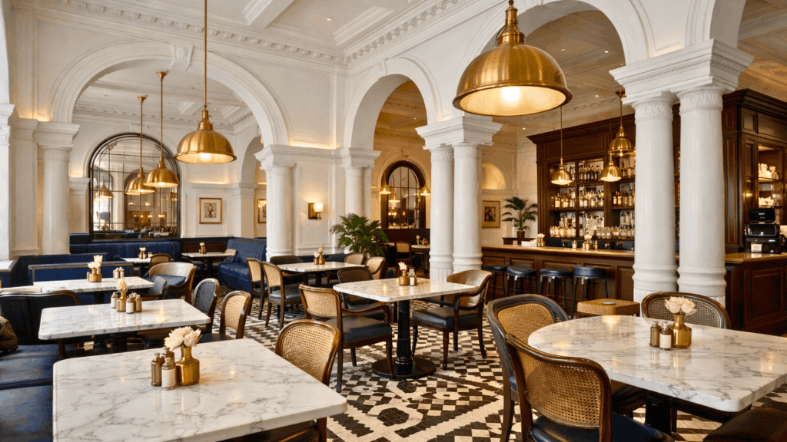
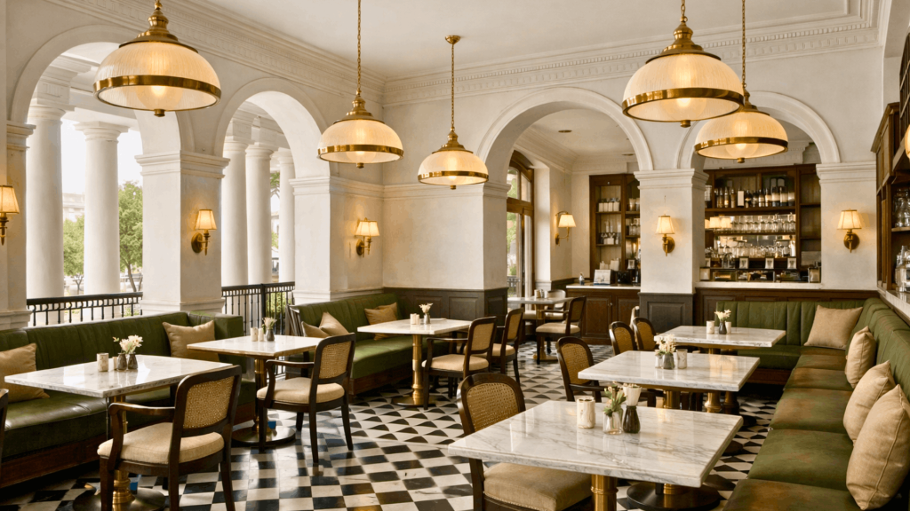
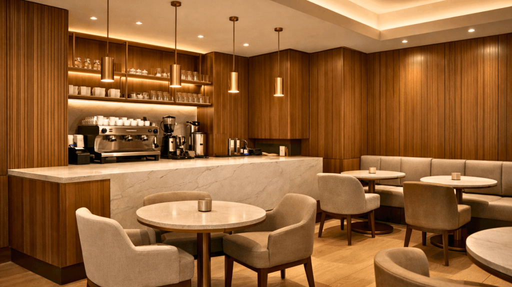
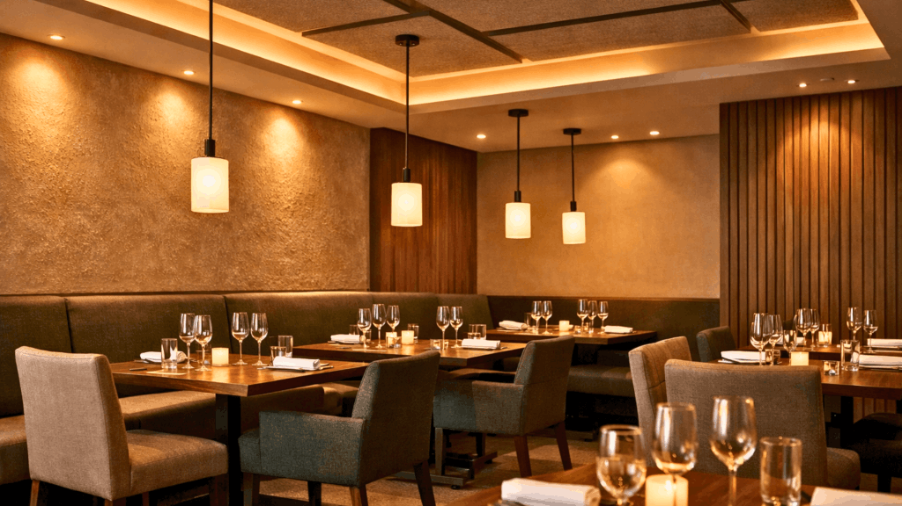
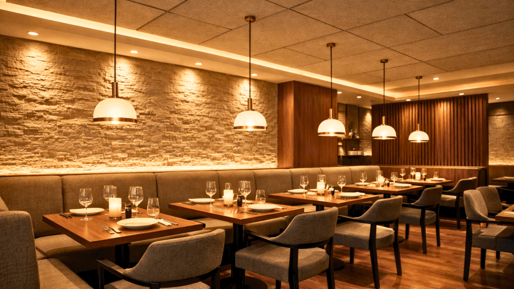
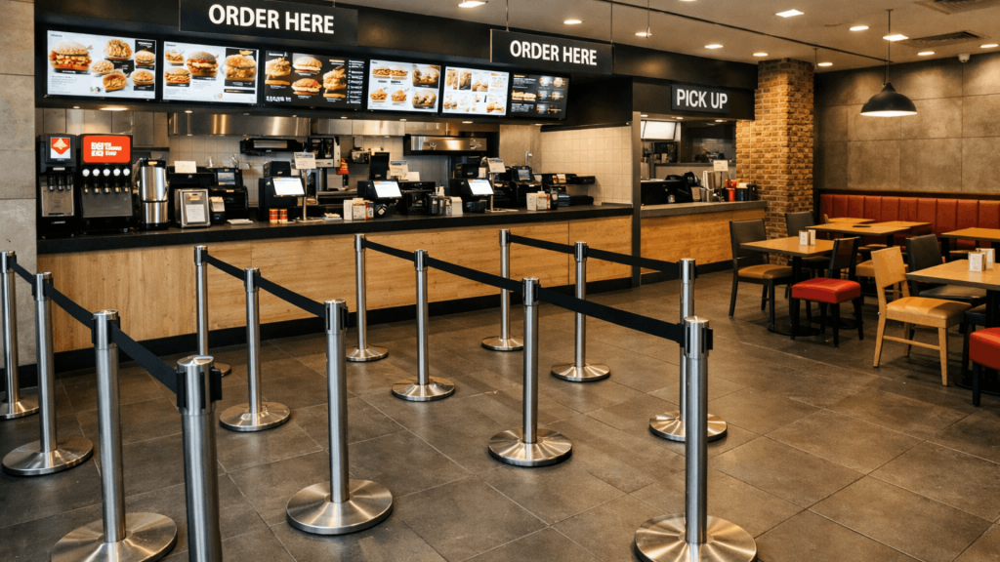

In the competitive hospitality landscape of Bangalore and Delhi, interior design has become the defining factor that transforms ordinary outlets into customer magnets. A Coffee Shop and Restaurant Interior Designer doesn’t just arrange furniture—they architect experiences. From strategic lighting and flow management to material selection and brand storytelling, every design decision shapes how customers perceive and remember your space. For SprintCo, designing F&B environments means creating cohesive spaces where operational efficiency meets aesthetic appeal.
Whether it’s a specialty coffee bar in Indiranagar, a quick-service restaurant near MG Road, a premium bistro in Khan Market, or a neighborhood eatery in Koramangala, design determines whether customers return or move on. The right interior makes guests comfortable, encourages social sharing, and builds the kind of loyalty that keeps tables full.

Understanding Modern Coffee Shop and Restaurant Design
Coffee shops and restaurants today serve multiple purposes—remote workspaces, meeting venues, celebration spots, and content creation backgrounds. To design these multifunctional environments, a Coffee Shop and Restaurant Interior Designer must balance several critical factors:
Brand Expression: Every F&B space has a personality. The interior must communicate it clearly—whether industrial, contemporary, traditional, or eclectic.
Spatial Intelligence: Efficient planning ensures every square foot contributes to customer comfort and operational flow without feeling cramped.
Lighting Strategy: From ambient overhead systems to focused task lighting, illumination defines atmosphere and highlights design features.
Material Durability: The selection of surfaces—stone, engineered wood, metal, or composite materials—must withstand daily F&B operations while maintaining visual appeal.
Circulation Planning: The layout must support both customer movement and service efficiency, with clear paths between dining areas, service counters, and kitchen access points.
At SprintCo, every project begins with understanding your brand positioning, target customers, operational requirements, and long-term business goals.

Why Choose SprintCo as Your Coffee Shop and Restaurant Interior Designer
SprintCo has established itself as a trusted Coffee Shop and Restaurant Interior Designer across Bangalore and Delhi, known for creating spaces that balance visual impact with operational practicality. The team specializes in F&B environments where design serves the business as much as the customer.
Core strengths of SprintCo’s approach:
F&B-Focused Design: Every coffee shop and restaurant is designed with real-world service flow in mind, ensuring staff can work efficiently during peak hours.
Regional Sensibility: Designs that resonate with local tastes in Bangalore and Delhi while incorporating contemporary global trends.
Budget Transparency: Clear cost structures and value engineering ensure you get maximum impact without unnecessary expenses.
Durable Specifications: Material and finish selections are prioritized for heavy daily use, reducing maintenance costs over time.
Complete Execution: From initial concept and detailed drawings through on-site supervision and final styling—one team, one point of contact.

Coffee Shop and Restaurant Interior Designer in Delhi – Shaping Urban Dining Experiences
As a Coffee Shop and Restaurant Interior Designer in Delhi, SprintCo understands the unique demands of the capital’s diverse neighborhoods. Delhi’s F&B scene ranges from high-energy Connaught Place to trend-conscious Hauz Khas Village to family-oriented Greater Kailash. Each location requires a different design approach based on demographic patterns and competitive positioning.
SprintCo approaches each Delhi project with location-specific insights. A coffee shop near a corporate hub might require clean lines, efficient seating turnover, and power outlets at every table. A restaurant in a residential area might emphasize comfortable seating, warm materials, and acoustic design that supports conversation. This contextual understanding helps create spaces that feel native to their surroundings while standing out from competitors.
Essential Design Elements for Successful F&B Spaces
Creating a memorable coffee shop or restaurant involves strategic attention to fundamental design components. The following elements form the foundation of every SprintCo project:
1. Zoning and Operational Flow
Proper zoning prevents bottlenecks and confusion. SprintCo as a Coffee Shop and Restaurant Interior Designer strategically plan entry sequences, ordering zones, seating areas, service stations, and back-of-house access to support smooth operations during all service periods.
2. Atmosphere Through Lighting
Lighting controls the entire mood of an F&B space. Layered lighting—combining ambient, accent, and task illumination—creates depth and visual interest. SprintCo designs lighting schemes that photograph well while maintaining functionality for dining and working.
3. Furniture Strategy
Seating must balance comfort with appropriate dwell time for your business model. SprintCo selects and often custom-designs furniture that supports your operational goals—whether encouraging quick turnover or longer stays with laptop-friendly table heights and ergonomic seating.
4. Color and Material Palette
Material choices communicate your brand positioning. Industrial spaces might use exposed concrete and metal, while premium concepts lean toward stone, walnut veneer, and brass detailing. SprintCo creates cohesive palettes that reinforce your brand identity through every surface.
5. Texture and Tactile Experience
Physical textures make spaces feel grounded and real. Feature walls with texture, varied flooring materials, and mixed furniture finishes create visual complexity that holds attention. SprintCo layers textures thoughtfully to add richness without visual chaos.

How SprintCo Transforms Concepts into Operating Spaces
Every successful F&B venue starts as an idea—a concept, target audience, or service model. SprintCo follows a structured process from concept to opening day:
1. Discovery and Strategic Planning
The process begins with understanding your brand story, competitive landscape, operational model, and budget parameters. SprintCo researches successful comparable concepts and identifies design opportunities specific to your location.
2. Space Planning and Layout Development
Efficient layouts maximize revenue-generating seating while maintaining code compliance and operational flow. SprintCo as a Coffee Shop and Restaurant Interior Designer create plans that optimize square footage for both customer experience and staff efficiency.
3. Design Development and Visualization
Once the direction is established, SprintCo develops detailed 3D renderings showing materials, finishes, lighting, and furniture. This visualization process ensures alignment before any construction begins.
4. Material Specification and Procurement
SprintCo’s vendor relationships ensure access to commercial-grade materials at competitive pricing. Every specification is chosen for its performance in high-traffic F&B environments, not just its appearance in a showroom.
5. Project Management and Execution
The final phase involves coordinating trades, managing timelines, maintaining quality standards, and delivering your space ready for operations—on schedule and on budget.

Coffee Shop and Restaurant Interior Designer in Bangalore – Designing for India’s Tech Capital
Bangalore’s unique position as India’s tech hub has created a sophisticated F&B culture with high expectations for design quality. As a Coffee Shop and Restaurant Interior Designer in Bangalore, SprintCo has delivered projects across Indiranagar, Koramangala, Whitefield, and HSR Layout—each with distinct demographic characteristics.
SprintCo has completed Bangalore projects featuring various concepts:
Tech-Friendly Coffee Shops with ample power outlets, strong Wi-Fi, and work-conducive seating arrangements.
Casual Dining Restaurants balancing family comfort with contemporary aesthetics.
Quick Service Formats optimized for high turnover without sacrificing design quality.
Premium Concepts using refined materials and sophisticated lighting for elevated positioning.
Each project reflects operational requirements while maintaining the design integrity that makes customers choose your space over alternatives.

Current Design Directions in F&B Interiors
The restaurant and coffee shop industry evolves continuously, with design trends responding to changing customer expectations. SprintCo as a Coffee Shop and Restaurant Interior Designer stay ahead of these movements:
Operational Sustainability: Energy-efficient systems, durable materials, and designs that reduce long-term operating costs.
Flexible Formats: Spaces that can adapt to different service models and customer needs throughout the day.
Technology Integration: Seamless incorporation of ordering systems, payment infrastructure, and connectivity without visible clutter.
Biophilic Elements: Strategic use of plants, natural materials, and nature references that improve ambiance and air quality.
Cultural Authenticity: Designs that reference local context and materials rather than generic international aesthetics.
Multi-Sensory Approach: Attention to acoustics, ventilation, and material textures beyond pure visual design.
Lighting and Acoustics – Critical but Often Overlooked
Lighting creates mood, but acoustics create comfort. A successful F&B space requires both. Harsh overhead lighting and excessive echo drive customers away faster than poor service. SprintCo uses multiple lighting layers—overhead ambient, focused accent, and decorative feature lighting—to create warm, flattering illumination. Acoustic treatments through ceiling design, wall materials, and strategic sound absorption ensure conversation remains comfortable even when the space is busy.
Furniture and Circulation – Where Design Meets Operations
Layout determines operational efficiency and revenue potential. Poorly planned circulation creates service bottlenecks and uncomfortable dining experiences. SprintCo as a Coffee Shop and Restaurant Interior Designer emphasize clear paths, appropriate table spacing, and furniture that supports your specific business model—whether optimizing for throughput or encouraging longer visits. Every furniture selection considers both aesthetic impact and ergonomic appropriateness for typical customer behaviour.

Coffee Shop and Restaurant Interior Designer Delhi and Bangalore – Meeting Regional Expectations
As a Coffee Shop and Restaurant Interior Designer operating in both Delhi and Bangalore, SprintCo understands that each city has distinct design sensibilities and customer expectations. Delhi’s F&B culture often leans toward bold statements and social spaces, while Bangalore customers frequently prioritize functionality and understated sophistication. SprintCo delivers projects that feel contextually appropriate while maintaining strong brand identity.
Both markets demand:
Intelligent space division between service areas and customer zones.
Instagram-worthy moments that encourage organic social promotion.
Local material references that create authentic connections.
Scalable design systems that work across different footprints.
Why Interior Design Determines F&B Success
A coffee shop or restaurant’s performance isn’t solely about food and beverage quality—environment plays an equally critical role. Research indicates customers will pay premium prices and visit more frequently when the space makes them comfortable. Thoughtful design increases average visit duration, improves per-customer spend, and strengthens brand recognition.
Design must also support operations—kitchen access, service counter placement, restroom location, and storage access. Good design solves these problems invisibly, creating spaces that feel effortless while working hard behind the scenes.
How SprintCo Delivers Commercial Value Through Design
SprintCo approaches every project as a business investment, ensuring design decisions support financial performance:
Energy Performance: Lighting and HVAC specifications that reduce monthly operating expenses.
Material Longevity: Surfaces and finishes selected for multi-year durability under heavy use.
Maintenance Efficiency: Design details that clean easily and age gracefully without constant attention.
Revenue Optimization: Seating plans that maximize covers while maintaining code compliance and comfort.
Each space is designed for today’s opening and tomorrow’s sustained operations.

Project Example: Transforming a Challenging Space into a High-Performance Venue
A recent SprintCo project involved converting a narrow, deep 850 sq. ft. space in Bangalore into a profitable coffee shop. The design concept focused on “Layered Transparency”—using glass partitions, staggered seating levels, and suspended lighting to create visual depth. Despite the challenging proportions, strategic zoning ensured efficient barista workflow and comfortable seating for 28 customers. Within six weeks of opening, the space achieved consistent full occupancy during peak hours—demonstrating how focused design strategy directly impacts business performance.
Guidance from SprintCo for F&B Entrepreneurs
Define Your Position: Understand what makes your concept different before discussing design.
Plan for Evolution: Customer needs and service models change—build flexibility into your space.
Prioritize Lighting: It’s the single most impactful and cost-effective design element.
Don’t Overpack: Resist the temptation to maximize seating at the expense of comfort and circulation.
Invest in Professional Design: Working with experienced Coffee Shop and Restaurant Interior Designers like SprintCo ensures your capital investment creates lasting value.
Conclusion – Creating Spaces That Drive Business Success
Coffee shop and restaurant interiors are business tools that happen to look beautiful. Every material choice, lighting decision, and furniture placement should support your operational model and customer experience goals. With SprintCo’s expertise as a Coffee Shop and Restaurant Interior Designer, your F&B concept becomes a competitive advantage—where design clarity translates directly to customer loyalty and financial performance.
Whether you’re opening in Bangalore’s tech corridors or Delhi’s diverse neighborhoods, choosing the right Coffee Shop and Restaurant Interior Designer determines whether your space becomes a destination or just another option. SprintCo continues to deliver F&B environments where strategic design and operational intelligence create lasting business value.
About SprintCo – F&B-Focused Interior Design
SprintCo is a specialized interior design firm focused exclusively on food and beverage environments. Operating across Bangalore and Delhi, the firm delivers complete design-build solutions for coffee shops, restaurants, QSR formats, and specialty F&B concepts. Known for operational intelligence, material specification expertise, and execution reliability, SprintCo has become a trusted partner for F&B entrepreneurs who understand that design is a business decision, not just an aesthetic choice.

20 Detailed Questions About Coffee Shop and Restaurant Interior Design
1. What makes SprintCo different as a Coffee Shop and Restaurant Interior Designer in Bangalore and Delhi?
SprintCo stands out as a Coffee Shop and Restaurant Interior Designer through its exclusive focus on F&B environments. Unlike general interior designers who handle various project types, SprintCo specializes in understanding operational flow, service efficiency, and the specific durability requirements of food and beverage spaces. The team designs with real-world F&B operations in mind—considering kitchen access, service counter workflow, peak hour traffic patterns, and maintenance realities. Every project reflects strategic brand positioning through coordinated materials, lighting, and spatial planning. As experienced Coffee Shop and Restaurant Interior Designers, SprintCo creates environments that support both customer experience and operational profitability across Bangalore and Delhi’s competitive hospitality markets.
2. How do Coffee Shop and Restaurant Interior Designers in Bangalore create spaces that attract tech professionals?
Coffee Shop and Restaurant Interior Designers in Bangalore recognize the city’s large population of tech professionals who use cafés as secondary workspaces. SprintCo addresses this demographic by incorporating abundant power outlets, ergonomic seating with laptop-friendly table heights, and strong ambient lighting suitable for screen work. The design balances productivity requirements with social atmosphere—creating zones for focused work and areas for meetings. Material selections lean toward contemporary aesthetics with industrial touches that resonate with tech-savvy customers. As specialized Coffee Shop and Restaurant Interior Designers, SprintCo understands that Bangalore’s unique professional culture requires thoughtful design that serves both traditional dining needs and modern workspace expectations.
3. What are the current design trends that Coffee Shop and Restaurant Interior Designers in Delhi are implementing?
Coffee Shop and Restaurant Interior Designers in Delhi are currently incorporating several key trends. SprintCo observes strong movement toward industrial-modern aesthetics with exposed services, metal framework, and raw material textures. Sustainability has become important, with clients requesting recycled materials, energy-efficient lighting, and locally sourced elements. Open kitchen concepts continue gaining popularity, requiring careful integration of service areas with dining spaces. Delhi customers also respond well to culturally referenced design—modern interpretations of traditional patterns, local craft elements, and regional material choices. As forward-thinking Coffee Shop and Restaurant Interior Designers, SprintCo ensures trend adoption serves your brand strategy rather than following fashion without purpose.
4. How can I select the right Coffee Shop and Restaurant Interior Designer for my F&B project?
Selecting the right Coffee Shop and Restaurant Interior Designer requires evaluating specialized experience, not just portfolio aesthetics. SprintCo recommends reviewing completed F&B projects specifically, understanding the designer’s approach to operational planning, and assessing their material specification knowledge. Ask potential designers about kitchen workflow, service efficiency, and durability specifications—these reveal whether they understand F&B realities beyond visual design. Evaluate their project management capabilities and vendor relationships, which significantly impact timeline and budget control. As dedicated Coffee Shop and Restaurant Interior Designers, SprintCo provides transparent processes, realistic timelines, and commercial-grade specifications that ensure your investment delivers both aesthetic impact and long-term operational value.
5. What is the typical investment for hiring Coffee Shop and Restaurant Interior Designers in Bangalore and Delhi?
Investment for Coffee Shop and Restaurant Interior Designers in Bangalore and Delhi varies based on space size, concept complexity, and finish specifications. SprintCo’s complete design-build services typically range from ₹1,200 to ₹2,800 per sq. ft., including design development, detailed drawings, material procurement, and execution supervision. This comprehensive approach covers layout planning, 3D visualization, lighting design, furniture specification, and on-site project management. SprintCo provides detailed cost breakdowns early in the process, ensuring transparency and allowing informed decisions about material selections and finish levels. Working with experienced Coffee Shop and Restaurant Interior Designers prevents costly mistakes and delivers commercial-quality spaces that justify the investment through enhanced customer experience and operational efficiency.
6. How does SprintCo balance aesthetic appeal with operational functionality as a Coffee Shop and Restaurant Interior Designer?
SprintCo, as a Coffee Shop and Restaurant Interior Designer, prioritize operational functionality as the foundation, then layers aesthetic appeal that supports your brand positioning. The process begins with understanding workflow—how staff move through the space, where bottlenecks occur, and how service operates during peak periods. Seating layouts, counter placement, and circulation paths are planned for efficiency first. Aesthetic decisions—materials, colors, lighting, furniture styles—are then selected to reinforce brand identity while meeting durability requirements. This approach ensures visually appealing spaces that actually work during service. As specialized Coffee Shop and Restaurant Interior Designers, SprintCo proves that strategic design thinking creates environments that are both operationally sound and aesthetically compelling.
7. What materials do Coffee Shop and Restaurant Interior Designers recommend for high-traffic F&B spaces?
Experienced Coffee Shop and Restaurant Interior Designers like SprintCo specify materials based on performance under continuous F&B operations. For flooring, vitrified tiles, polished concrete, or commercial-grade vinyl provide durability and easy maintenance. Countertops typically use engineered stone, stainless steel, or solid surface materials that resist staining and heat. Wall finishes might include washable paints, ceramic tiles in service areas, or textured panels in dining zones. Furniture requires commercial-grade upholstery, solid wood or metal frames, and finishes resistant to frequent cleaning. As practical Coffee Shop and Restaurant Interior Designers, SprintCo selects every material considering not just initial appearance but long-term performance, maintenance requirements, and life-cycle costs in demanding hospitality environments.
8. How long does a complete coffee shop or restaurant interior project typically take in Bangalore or Delhi?
Timeline for Coffee Shop and Restaurant Interior Designers to complete projects depends on space size and complexity. SprintCo typically delivers turnkey coffee shop projects (500-1000 sq. ft.) in 50-80 days, covering design development, approvals, procurement, and execution. Larger restaurant projects (1500-3000 sq. ft.) generally require 75-120 days. The process includes initial design consultation (1-2 weeks), detailed design and approvals (2-3 weeks), procurement and pre-fabrication (2-3 weeks), and on-site execution (4-8 weeks). Clear project management and experienced vendor relationships help maintain schedules. As efficient Coffee Shop and Restaurant Interior Designers, SprintCo provides realistic timelines and maintains transparent communication throughout execution, ensuring you can plan your opening with confidence.
9. Can SprintCo customize designs to reflect specific brand identities and menu concepts?
Absolutely. SprintCo, as a Coffee Shop and Restaurant Interior Designer, specializes in brand-aligned design development. The process begins with understanding your brand positioning, target customer profile, menu concept, and service model. These insights inform every design decision—from color palettes and material selections to furniture styles and lighting character. A specialty coffee roastery might receive industrial-minimal treatment with equipment visibility, while a family restaurant might emphasize warm materials and comfortable booth seating. Menu influence matters too—a dessert-focused concept might use lighter tones and refined details, while a bold fusion restaurant might embrace eclectic material combinations. As strategic Coffee Shop and Restaurant Interior Designers, SprintCo ensures your interior communicates brand identity from the moment customers arrive.
10. Why is strategic lighting so critical in coffee shop and restaurant interior design?
Lighting fundamentally shapes how customers experience F&B spaces. Coffee Shop and Restaurant Interior Designers use lighting to define atmosphere, highlight design features, and support various activities. SprintCo employs layered lighting strategies—ambient illumination for general comfort, accent lighting for visual interest, and task lighting where needed for reading or work. Warm color temperatures create inviting atmospheres, while lighting intensity influences perceived energy level. Proper lighting also affects how food appears and how well spaces photograph for social media. As experienced Coffee Shop and Restaurant Interior Designers, SprintCo understands that lighting investment delivers disproportionate impact on customer satisfaction, brand perception, and ultimately business performance.
11. What defines contemporary coffee shop and restaurant interior design aesthetics?
Contemporary approaches from Coffee Shop and Restaurant Interior Designers emphasize authenticity over decoration, functionality over pure aesthetics, and spatial quality over surface treatment. SprintCo’s current work features honest material expression—leaving concrete, brick, or metal visible rather than concealing structure. Open plans with strategic zoning replace compartmentalized rooms. Lighting becomes architectural rather than decorative. Furniture mixes styles and materials rather than matching sets. Color palettes tend toward neutrals with carefully placed accent moments. As progressive Coffee Shop and Restaurant Interior Designers, SprintCo creates spaces that feel current without appearing trendy, ensuring your investment remains relevant beyond immediate fashion cycles.
12. How can small coffee shops in Bangalore or Delhi maximize limited space through design?
Small spaces require particularly thoughtful planning from Coffee Shop and Restaurant Interior Designers. SprintCo maximizes limited square footage through several strategies: custom millwork that integrates storage efficiently, banquette seating against walls to use perimeter space, bar seating that requires minimal floor area, and vertical design elements that draw eyes upward. Material choices also matter—lighter tones and reflective surfaces expand perceived space, while strategic mirrors create depth. Multi-level design using platforms or mezzanines can increase capacity where ceiling heights allow. As resourceful Coffee Shop and Restaurant Interior Designers, SprintCo proves that compact spaces can deliver full-sized impact when every design decision serves both aesthetics and spatial efficiency.
13. How does color selection influence customer behavior in F&B spaces?
Color psychology significantly impacts how customers perceive and behave in hospitality environments. Coffee Shop and Restaurant Interior Designers use color strategically to influence mood and behavior. SprintCo applies warm earth tones—ochre, terracotta, warm grays—to create comfort and encourage longer visits. Cooler tones can energize quick-service formats. Neutral backgrounds with strategic color accents provide flexibility for evolving brand needs. Color saturation matters too—highly saturated colors create energy but can fatigue quickly, while muted tones support extended comfort. As psychology-informed Coffee Shop and Restaurant Interior Designers, SprintCo develops color strategies aligned with your business model—whether encouraging turnover in QSR formats or promoting extended visits in coffee shops.
14. How do Coffee Shop and Restaurant Interior Designers in Delhi and Bangalore ensure both comfort and visual impact?
Leading Coffee Shop and Restaurant Interior Designers in Delhi and Bangalore like SprintCo understand that comfort and aesthetics reinforce each other rather than compete. The approach begins with ergonomic fundamentals—appropriate seat heights, table dimensions, and spacing. Acoustic treatments through ceiling design and material selection ensure comfortable sound levels. Climate control integration maintains physical comfort without visible equipment dominating the space. Visual impact then layers onto this comfortable foundation through material quality, lighting design, and spatial composition. As experienced Coffee Shop and Restaurant Interior Designers, SprintCo demonstrates that truly successful spaces make customers comfortable enough to stay while providing visual interest that makes them want to return.
15. Can SprintCo design environmentally responsible coffee shops and restaurants?
Yes, SprintCo as a Coffee Shop and Restaurant Interior Designer, incorporates sustainable practices throughout design and execution. Strategies include specifying locally sourced materials to reduce transportation impact, selecting durable products that avoid frequent replacement, integrating energy-efficient LED lighting and climate control, and using low-VOC paints and finishes for indoor air quality. The team also considers operational sustainability—designs that minimize waste during construction and create spaces that are energy-efficient to operate. Sustainable design isn’t just environmental responsibility—it often reduces long-term operating costs significantly. As forward-thinking Coffee Shop and Restaurant Interior Designers, SprintCo helps clients build spaces that perform well environmentally and financially.
16. How can interior design directly influence revenue in coffee shops and restaurants?
Design impacts revenue through multiple mechanisms that Coffee Shop and Restaurant Interior Designers must understand. SprintCo approaches design as business strategy: efficient layouts maximize revenue-generating seating within available space, comfortable environments encourage longer visits and higher per-customer spending, strategic design creates social media moments that drive organic marketing, and appropriate acoustic and lighting design supports the intended dining pace. Well-designed spaces also reduce operational costs through efficient workflows and durable material specifications. As commercially focused Coffee Shop and Restaurant Interior Designers, SprintCo ensures every design decision supports business performance, not just aesthetic goals—creating spaces that look compelling while driving measurable financial results.
17. What budget-conscious strategies do Coffee Shop and Restaurant Interior Designers recommend?
Experienced Coffee Shop and Restaurant Interior Designers like SprintCo employ several value-engineering approaches without compromising design quality. Strategies include prioritizing investment in high-impact elements like lighting and focal walls while using simpler treatments elsewhere, selecting locally available materials to reduce costs and lead times, custom-designing key furniture pieces while using standard items where appropriate, and phasing implementation to spread investment over time. The team also leverages strong vendor relationships for competitive pricing on commercial-grade materials. As pragmatic Coffee Shop and Restaurant Interior Designers, SprintCo helps clients allocate budgets strategically—maximizing perceived quality and operational performance while respecting financial constraints.
18. Do Coffee Shop and Restaurant Interior Designers also handle furniture and equipment selection?
Yes, comprehensive Coffee Shop and Restaurant Interior Designers like SprintCo provide complete FF&E (furniture, fixtures, and equipment) services. The process includes custom furniture design for signature pieces, specification of commercial-grade seating and tables, selection of lighting fixtures that support design intent, coordination of kitchen equipment placement with design layouts, and procurement of decorative elements that reinforce brand identity. SprintCo often custom-fabricates key items to ensure perfect fit and unique character while sourcing appropriate standard items where they serve the design effectively. As full-service Coffee Shop and Restaurant Interior Designers, SprintCo manages all interior elements, ensuring cohesive aesthetics and appropriate performance specifications throughout the space.
19. How does SprintCo integrate brand identity throughout coffee shop and restaurant interiors?
SprintCo, as a Coffee Shop and Restaurant Interior Designer, begins every project by understanding core brand attributes, then translates them into spatial design language. Brand colors inform material palettes, brand personality shapes furniture style and spatial character, brand positioning determines finish quality levels, and brand story influences graphic elements and decorative details. The team ensures brand integration feels organic rather than forced—avoiding obvious logo placement in favor of atmosphere that embodies brand values. Every touchpoint—from entry sequence through seating areas to restroom design—reinforces consistent brand experience. As brand-conscious Coffee Shop and Restaurant Interior Designers, SprintCo creates spaces where customers intuitively understand your brand positioning through environmental experience alone.
20. What are the key advantages of hiring specialized Coffee Shop and Restaurant Interior Designers versus general contractors?
Hiring specialized Coffee Shop and Restaurant Interior Designers like SprintCo provides critical advantages over general contractors. Designers bring F&B-specific expertise—understanding operational workflows, service efficiency requirements, and hospitality industry durability standards that contractors typically lack. SprintCo provides complete conceptual thinking, developing cohesive design strategies that support brand positioning and business goals. The team prevents costly mistakes through knowledge of code requirements, equipment specifications, and appropriate material selections for F&B environments. While contractors execute plans, Coffee Shop and Restaurant Interior Designers create the strategic vision that determines long-term success. As specialized professionals, SprintCo delivers both creative design thinking and technical execution knowledge, ensuring your investment creates competitive advantage rather than just functional space.

Pan-India presence | 3500+ F&B spaces delivered — Visit SprintCo’s Website
FAQ's
Why is interior design more important in Bangalore and Delhi than other cities?
In the competitive hospitality landscape of Bangalore and Delhi, interior design has become the defining factor that transforms ordinary outlets into customer magnets. Whether it’s a specialty coffee bar in Indiranagar, a quick-service restaurant near MG Road, a premium bistro in Khan Market, or a neighborhood eatery in Koramangala, design determines whether customers return or move on.
What are the most important elements of coffee shop and restaurant interior design?
The critical elements include brand expression, spatial intelligence, lighting strategy, material durability, and circulation planning. Every square foot must contribute to customer comfort and operational flow without feeling cramped. Together these elements create a space that works as beautifully as it looks
What are the current interior design trends for restaurants and coffee shops in Delhi?
Current trends include industrial-modern aesthetics with exposed services and raw material textures, sustainability through recycled materials and energy-efficient lighting, open kitchen concepts, and culturally referenced design — modern interpretations of traditional patterns, local craft elements, and regional material choices.
What materials are best for high-traffic restaurant and coffee shop interiors?
For flooring, vitrified tiles, polished concrete, or commercial-grade vinyl provide durability and easy maintenance. Countertops typically use engineered stone, stainless steel, or solid surface materials that resist staining and heat. Furniture requires commercial-grade upholstery, solid wood or metal frames, and finishes resistant to frequent cleaning.
What is the difference between hiring a specialist F&B interior designer vs a general contractor?
Specialist designers bring F&B-specific expertise — understanding operational workflows, service efficiency requirements, and hospitality industry durability standards that contractors typically lack. They provide complete conceptual thinking, developing cohesive design strategies that support brand positioning and business goals, and prevent costly mistakes through knowledge of code requirements, equipment specifications, and appropriate material selections for F&B environments.